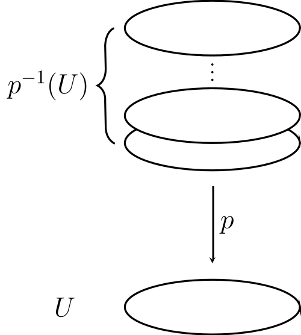

A few chapters ago we talked about what a fundamental group was, but we didn’t actually show how to compute any of them except for the most trivial case of a simply connected space. In this chapter we’ll introduce the notion of a covering projection, which will let us see how some of these groups can be found.
Prototypical example for this section: covers .
What we want now is a notion where a big space , a “covering space”, can be projected down onto a base space in a nice way. Here is the notion of “nice”:
Let be a continuous function. Let be an open set of . We call evenly covered (by ) if is a disjoint union of open sets (possibly infinite) such that restricted to any of these sets is a homeomorphism.
Picture:
Image from [img:even_covering]
All we’re saying is that is evenly covered if its pre-image is a bunch of copies of it. (Actually, a little more: each of the pancakes is homeomorphic to , but we also require that is the homeomorphism.)
A covering projection is a surjective continuous map such that every base point has an open neighborhood which is evenly covered by .
Let be satisfying this definition, except that need not be surjective. Show that the image of is a connected component of . Thus if is connected and is nonempty, then is already surjective. For this reason, some authors omit the surjectivity hypothesis as usually is path-connected.
Here is the most stupid example of a covering projection.
Let’s take disconnected copies of any space : formally, with the discrete topology on . Then there exists a tautological covering projection by ; we just project all copies.
This is a covering projection because every open set in is evenly covered.
This is not really that interesting because is not path-connected.
A much more interesting example is that of and .
Take by . This is essentially wrapping the real line into a single helix and projecting it down.
ΨΨvar flatten = yscale(0.4);
ΨΨguide g;
ΨΨfor (real a=90+360*5; a>=90; a-=20){
ΨΨΨg = g .. flatten*dir(a)+(0, a/360/3);
ΨΨ}
ΨΨdraw(g, Arrows);
ΨΨdraw((0, -0.4)--(0, -1.4), Arrow, L=Label("$p$"));
ΨΨdraw(shift(0, -2)*flatten*unitcircle, L=Label("$S^1$", Relative(0.1)));
Ψ
We claim this is a covering projection. Indeed, consider the point (where we view as the unit circle in the complex plane). We can draw a small open neighborhood of it whose pre-image is a bunch of copies in .
ΨΨsize(12cm);
ΨΨreal[] t = {-2,-1,0,1,2};
ΨΨxaxis(-3.5,3.5, graph.LeftTicks(Ticks=t), Arrows);
ΨΨpen bloo = blue+1.5;
ΨΨdotfactor *= 2;
ΨΨpair A,B;
ΨΨfor (real x = -2; x <= 2; ++x) {
ΨΨΨA = (x-0.2, 0); B = (x+0.2, 0);
ΨΨΨdraw(A--B, bloo); opendot(A, blue); opendot(B, blue);
ΨΨ}
ΨΨMP("\mathbb R", (3,0), dir(90));
ΨΨadd(shift( (0,3) ) * CC());
ΨΨpath darrow = (0,2.5)--(0,1.5);
ΨΨMP("p", midpoint(darrow), dir(0));
ΨΨdraw(darrow, EndArrow);
ΨΨreal r = 1.4;
ΨΨdraw(scale(r)*unitcircle);
ΨΨMP("S^1", r*dir(45), dir(45));
ΨΨA = r*dir(-20);
ΨΨB = r*dir(20);
ΨΨdraw(arc(origin, A, B), bloo);
ΨΨopendot(A, blue); opendot(B, blue);
ΨΨdot("$1$", r*dir(0), dir(0));
Ψ
Note that not all open neighborhoods work this time: notably, does not work because the pre-image would be the entire .
The map by is also a covering projection. Can you see why?
For those comfortable with complex arithmetic,
The exponential map is a covering projection.
For each , the th power map is a covering projection.
Prototypical example for this section: covers .
Now here’s the key idea: we are going to try to interpret loops in as paths in . This is often much simpler. For example, we had no idea how to compute the fundamental group of , but the fundamental group of is just the trivial group. So if we can interpret loops in as paths in , that might (and indeed it does!) make computing tractable.
Let be a path and a covering projection. A lifting of is a path such that .
Picture:
Take by (so is considered again as the unit circle). Consider the path in which starts at and wraps around once, counterclockwise, ending at again. In symbols, by .
Then one lifting is the path which walks from to . In fact, for any integer , walking from to works.
ΨΨΨsize(6cm);
ΨΨΨreal[] t = {-1,0,1,2};
ΨΨΨxaxis(-2,3, graph.LeftTicks(Ticks=t), Arrows);
ΨΨΨMP("\mathbb R", (2.5,0), dir(90));
ΨΨΨpath gt = (0,0.3)--(1,0.3);
ΨΨΨdraw(gt, blue, EndArrow);
ΨΨΨlabel("$\tilde\gamma$", midpoint(gt), dir(90), blue);
ΨΨΨadd(shift( (0,3) ) * CC());
ΨΨΨpath darrow = (0,2.5)--(0,1.5);
ΨΨΨMP("p", midpoint(darrow), dir(0));
ΨΨΨdraw(darrow, EndArrow);
ΨΨΨreal r = 1.2;
ΨΨΨdraw(scale(r)*unitcircle);
ΨΨΨMP("S^1", r*dir(45), dir(45));
ΨΨΨdot("$1$", r*dir(0), dir(0));
ΨΨΨpath g = dir(20)..dir(100)..dir(180)..dir(260)..dir(340);
ΨΨΨdraw(g, red, EndArrow);
ΨΨΨlabel("$\gamma$", midpoint(g), -dir(midpoint(g)), red);
ΨΨΨMP("p(0) = 1", (2.5,0.5));
ΨΨΨMP("p(1) = 1", (2.5,0));
ΨΨ
Similarly, the counterclockwise path from to has a lifting: for some integer , the path from to .
The above is the primary example of a lifting. It seems like we have the following structure: given a path in starting at , we start at any point in the fiber . (In our prototypical example, , and that’s why we start at any integer .) After that we just trace along the path in , and we get a corresponding path in .
Take a path in with . Convince yourself that once we select an integer , then there is exactly one lifting starting at .
It turns out this is true more generally.
Suppose is a path with , and is a covering projection. Then there exists a unique lifting such that .
For every point , consider an evenly covered open neighborhood in . Then the family of open sets
is an open cover of . As is compact we can take a finite subcover. Thus we can chop into finitely many disjoint closed intervals in that order, such that for every , is contained in some .
We’ll construct interval by interval now, starting at . Initially, place a robot at and a mouse at . For each interval , the mouse moves around according to however behaves on . But the whole time it’s in some evenly covered ; the fact that is a covering projection tells us that there are several copies of living in . Exactly one of them, say , contains our robot. So the robot just mimics the mouse until it gets to the end of . Then the mouse is in some new evenly covered , and we can repeat. ∎
The theorem can be generalized to a diagram
where is some general path-connected space, as follows.
Let be continuous and consider a covering projection . (As usual, , , are path-connected.) Then a lifting with exists if and only if
i.e. the image of under is contained in the image of under (both viewed as subgroups of ). If this lifting exists, it is unique.
As is injective, we actually have . But in this case we are interested in the actual elements, not just the isomorphism classes of the groups.
What happens if we put ?
Here’s another cool special case: Recall that a homotopy can be encoded as a continuous function . But is also simply connected. Hence given a homotopy in the base space , we can lift it to get a homotopy in .
Another nice application of this result is Chapter 33.
Prototypical example for this section: covers .
Let’s return to the task of computing fundamental groups. Consider a covering projection .
A loop can be lifted uniquely to in which starts at and ends at some point in the fiber . You can easily check that this does not change if we pick a different path homotopic to .
Look at the picture in Example 66.2.2.
Put one finger at , and one finger on . Trace a loop homotopic to in (meaning, you can go backwards and forwards but you must end with exactly one full counterclockwise rotation) and follow along with the other finger in .
Convince yourself that you have to end at the point .
Thus every homotopy class of a loop at (i.e. an element of ) can be associated with some in the fiber of . The below proposition summarizes this and more.
Let be a covering projection. Then we have a function of sets
by , where is the unique lifting starting at . Furthermore,
If is path-connected, then is surjective.
If is simply connected, then is injective.
Prove that path-connected implies is surjective. (This is really offensively easy.)
To prove the proposition, we’ve done everything except show that simply connected implies injective. To do this suppose that and are loops such that .
Applying lifting, we get paths and both starting at some point and ending at some point . Since is simply connected that means they are homotopic, and we can write a homotopy which unites them. But then consider the composition of maps
You can check this is a homotopy from to . Hence , done. ∎
This motivates:
A universal cover of a space is a covering projection where is simply connected (and in particular path-connected).
When is understood, we sometimes just say is the universal cover.
Let’s return to our standard . Since is simply connected, this is a universal cover of . And indeed, the fiber of any point in is a copy of the integers: naturally in bijection with loops in .
You can show (and it’s intuitively obvious) that the bijection
is in fact a group homomorphism if we equip with its additive group structure . Since it’s a bijection, this leads us to conclude .
Prototypical example for this section: comes from
Here’s another way to generate some coverings. Let be a topological space and a group acting on its points. Thus for every , we get a map by
We require that this map is continuous111Another way of phrasing this: the action, interpreted as a map , should be continuous, where on the left-hand side is interpreted as a set with the discrete topology. for every , and that the stabilizer of each point in is trivial. Then we can consider a quotient space defined by fusing any points in the same orbit of this action. Thus the points of are identified with the orbits of the action. Then we get a natural “projection”
by simply sending every point to the orbit it lives in.
Such a projection is called regular. (Terrible, I know.)
Let , and define the group action of on by
You can then think of as “real numbers modulo ”, with a complete set of representatives and .
ΨΨΨsize(9cm);
ΨΨΨdotfactor *= 2;
ΨΨΨpair A = MP("0", (-5.1,0), 1.4*dir(90));
ΨΨΨpair B = MP("1", (-3,0), 1.4*dir(90));
ΨΨΨdraw(A--B);
ΨΨΨDrawing("\frac13", (-4.4,0), 1.4*dir(90));
ΨΨΨDrawing("\frac23", (-3.7,0), 1.4*dir(90));
ΨΨΨMP("\mathbb R / G", (-4,-0.6), dir(-90));
ΨΨΨdot(A); opendot(B);
ΨΨΨdraw(unitcircle);
ΨΨΨdraw( (-2.4,0)--(-1.6,0), EndArrow);
ΨΨΨdot("$0=1$", dir(0), dir(0));
ΨΨΨdot("$\frac13$", dir(120), dir(120));
ΨΨΨdot("$\frac23$", dir(240), dir(240));
ΨΨΨlabel("$S^1$", origin, origin);
ΨΨ
So we can identify with and the associated regular projection is just our usual .
Let and , and define the group action of on by . As is a complete set of representatives, you can think of it as a unit square with the edges identified. We obtain the torus and a covering projection .
Let and let be the surface of the sphere, viewed as a subset of . We’ll let act on by sending ; hence the orbits are pairs of opposite points (e.g. North and South pole).
Let’s draw a picture of a space. All the orbits have size two: every point below the equator gets fused with a point above the equator. As for the points on the equator, we can take half of them; the other half gets fused with the corresponding antipodes.
Now if we flatten everything, you can think of the result as a disk with half its boundary: this is from before. The resulting space has a name: real projective -space, denoted .
ΨΨΨsize(3cm);
ΨΨΨdotfactor *= 2;
ΨΨΨdraw(dir(-90)..dir(0)..dir(90));
ΨΨΨdraw(dir(90)..dir(180)..dir(-90), dashed);
ΨΨΨfill(unitcircle, yellow+opacity(0.2));
ΨΨΨdot(dir(90));
ΨΨΨopendot(dir(-90));
ΨΨΨlabel("$\mathbb{RP}^2$", origin, origin);
ΨΨ
This gives us a covering projection (note that the pre-image of a sufficiently small patch is just two copies of it on .)
As above, we saw that there was a covering projection . Moreover the fiber of any point has size two. Since is simply connected, we have a natural bijection to a set of size two; that is,
This can only occur if , as there is only one group of order two!
Show each of the continuous maps is in fact a homeomorphism. (Name its continuous inverse).
Prototypical example for this section: , with fundamental group .
Next up, we’re going to turn functions between spaces into homomorphisms of fundamental groups.
Let and be topological spaces and . Recall that we defined a group homomorphism
More importantly, we have:
Let be a covering projection of path-connected spaces. Then the homomorphism is injective. Hence is an isomorphic copy of as a subgroup of .
We’ll show is trivial. It suffices to show if is a nulhomotopic loop in then its lift is nulhomotopic.
By definition, there’s a homotopy taking to the constant loop . We can lift it to a homotopy that establishes . But is a lift of (duh) and lifts are unique. ∎
Let’s look at the space with fundamental group . The group has two types of subgroups:
The trivial subgroup. This corresponds to the canonical projection , since is the trivial group ( is simply connected) and hence its image in is the trivial group.
for . This is given by the covering projection by . The image of a loop in the covering is a “multiple of ” in the base .
It turns out that these are the only covering projections of by path-connected spaces: there’s one for each subgroup of . (We don’t care about disconnected spaces because, again, a covering projection via disconnected spaces is just a bunch of unrelated “good” coverings.) For this statement to make sense I need to tell you what it means for two covering projections to be equivalent.
Fix a space . Given two covering projections and a map of covering projections is a continuous function such that .
Then two covering projections and are isomorphic if there are and such that and .
The set of covering projections forms a category in this way.
It’s an absolute miracle that this is true more generally: the greatest triumph of covering spaces is the following result. Suppose a space satisfies some nice conditions, like:
A space is called locally connected if for each point and open neighborhood of it, there is a connected open set with .
A space is semi-locally simply connected if for every point there is an open neighborhood such that all loops in are nulhomotopic. (But the contraction need not take place in .)
Pretty much every space I’ve shown you has these two properties. In other words, they are rather mild conditions, and you can think of them as just saying “the space is not too pathological”.
Then we get:
Suppose is a locally connected, semi-locally simply connected space. Then:
Every subgroup corresponds to exactly one covering projection with path-connected (up to isomorphism).
(Specifically, is the image of in through .)
Moreover, the normal subgroups of correspond exactly to the regular covering projections.
Hence it’s possible to understand the group theory of completely in terms of the covering projections.
Moreover, this is how the “universal cover” gets its name: it is the one corresponding to the trivial subgroup of . Actually, you can show that it really is universal in the sense that if is another covering projection, then is in turn covered by the universal space. More generally, if are subgroups, then the space corresponding to can be covered by the space corresponding to .